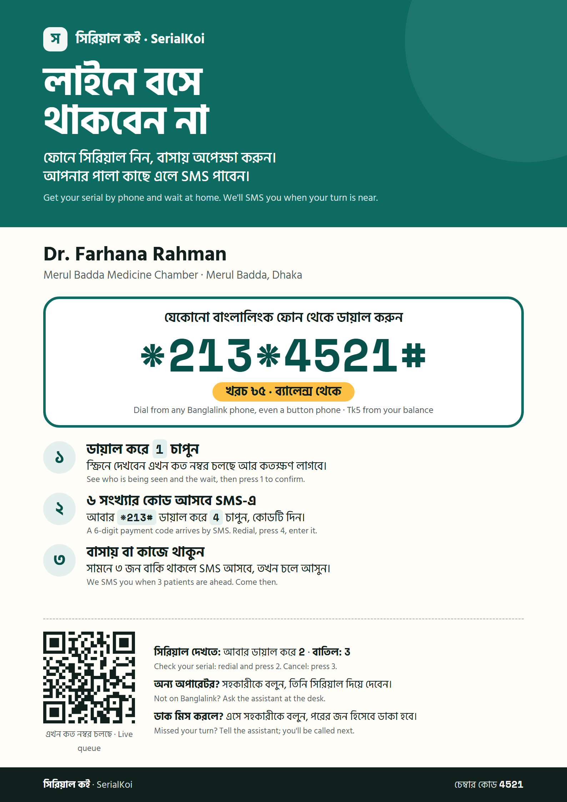
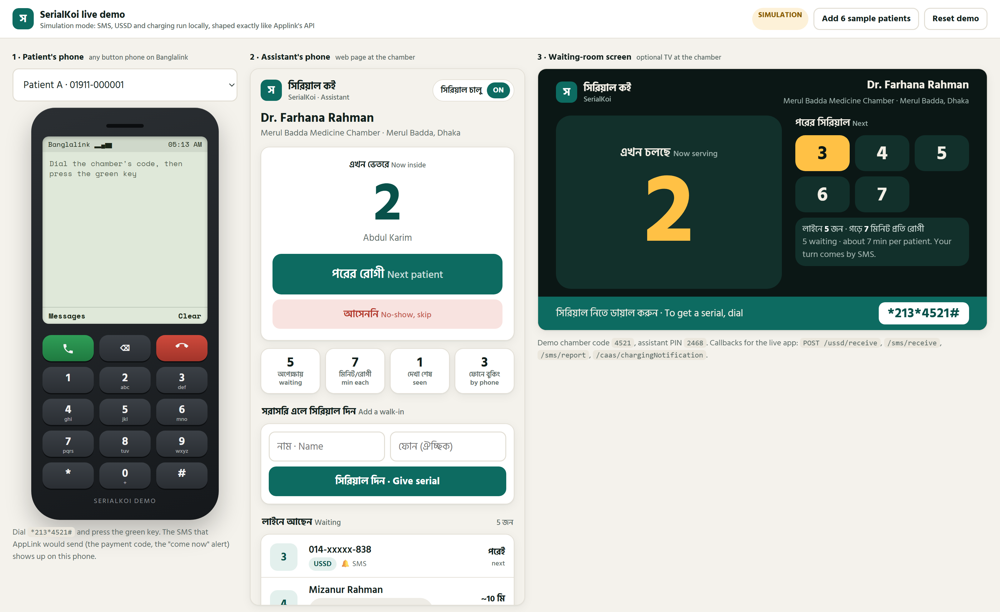
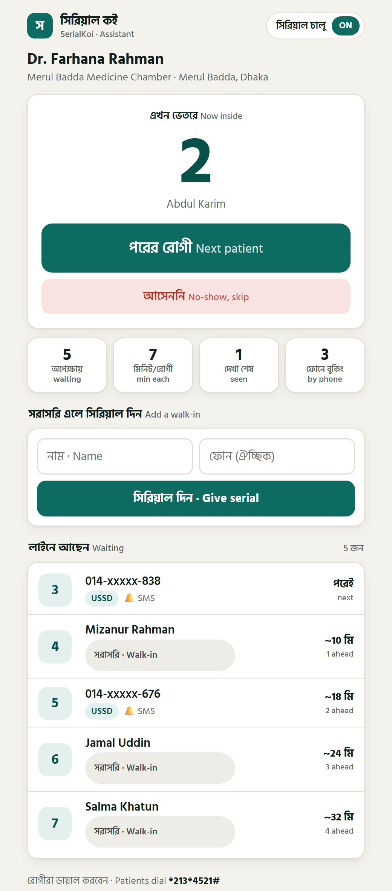
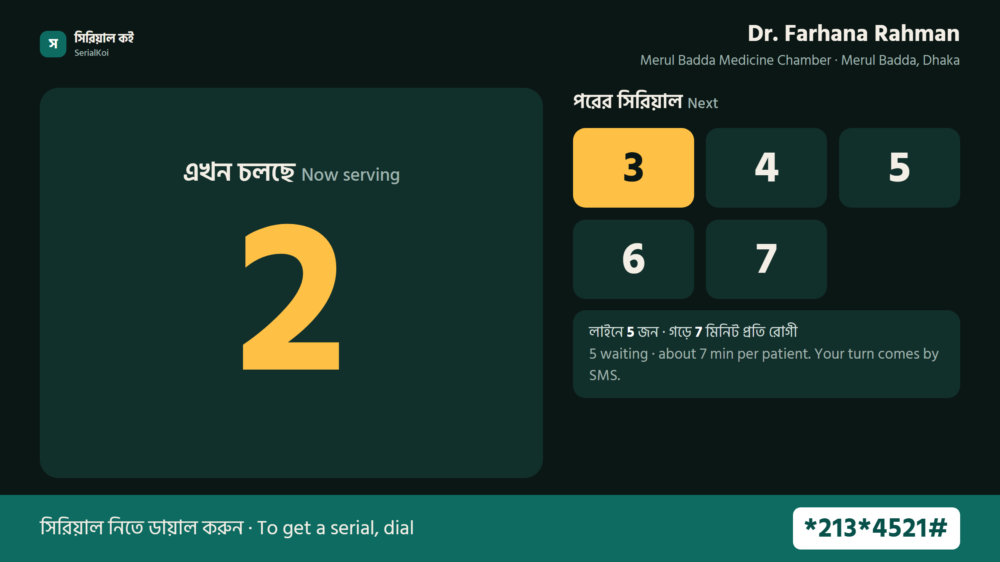

A doctor's serial from any phone, so patients wait at home instead of on a chamber bench. Built on Applink USSD, CaaS and SMS for Banglalink subscribers.
| Member | Role |
|---|---|
| Zarif Latif (team lead) | Backend, Applink integration, deployment |
| [Member 2] | [Field research, chamber partnerships] |
| [Member 3] | [Business model, marketing] |
| [Member 4, optional] | [Video, design] |
All members are undergraduates at BRAC University, Dhaka.
| Code | github.com/zariffromlatif/serialkoi |
| Live demo | [https://demo.<server>.sslip.io/sim] |
| Video | [2-minute demo link] |

Most Bangladeshis who see a specialist go to a private chamber: a doctor seeing patients in the evening after hospital duty. A serial number is taken by phone or at the desk, and then patients wait, often for hours, because nobody can tell them when their turn will come. Elderly patients, mothers with children and day labourers lose an evening and sometimes a day's wage.
SerialKoi gives the patient a serial from any phone, including the button phones that 46% of Bangladeshis still use1. They dial the code on the chamber poster, see who is being seen and the estimated wait, and pay a Tk5 booking fee from their Banglalink balance. The chamber assistant taps Next on a simple web page as each patient goes in. When only three patients are ahead, SerialKoi texts the patient to come now.
*213*4521#. See who is inside and the wait.SK <code> or redial and press 4. The serial arrives by SMS.Bangladesh has about 7 registered doctors per 10,000 people3, and specialists are scarcer still. After hospital duty, a specialist may see around 100 patients in an evening at a private chamber, according to one analysis4. Serials are handed out by phone or at the desk, so the order is known but the time is not.
Chambers visited: [5] in [Merul Badda, Rampura, Aftabnagar]
| What we measured | Result |
|---|---|
| Patients per evening | [x–y] |
| Median wait after arriving | [min] |
| Longest wait seen | [min] |
| How serials are taken today | [phone / desk] |
| Patients with a button phone | [x of y] |
| Assistants who would use SerialKoi | [x of 5] |
"[Quote from a doctor or assistant]"
No service lets a patient on a basic phone book a chamber serial and learn when to arrive. We found web booking for individual hospitals and token displays, but nothing that runs over USSD and SMS for independent chambers.

Dials the code on the poster, for example *213*4521#. The menu shows the doctor, who is inside, how many are waiting and the estimated wait. Press 1, then approve the Tk5 fee with the AppLink code that arrives by SMS. The serial is confirmed by SMS.
On any phone browser, in Bangla: Next patient, No-show, Add walk-in (with optional phone), and Arrived for a late patient. The page shows every waiting serial, its source and its estimated time.
When 3 patients are ahead, SerialKoi texts "please come now" with the minutes left. When called, a "your turn" SMS. A missed turn gets an SMS, and the patient is called next when they tell the assistant they've arrived.
| Backend | Python 3, FastAPI, SQLite (WAL mode) |
| Web pages | Plain HTML, CSS and JavaScript; Bangla and English; no build step |
| Server | Ubuntu, Caddy (automatic HTTPS), systemd; one setup script; daily database backups |
| Modes | live calls api.applink.com.bd; sim runs every SMS, USSD screen and charge locally for demos |
Each time the assistant taps Next, the real consultation length d updates the chamber's average: avg = 0.7·avg + 0.3·d, ignoring taps under 1 minute or over 45. A patient with n people ahead waits about (n + ½)·avg minutes when someone is already inside.
One active serial per phone per chamber per day; walk-ins and phone bookings share numbering; a recalled no-show goes to the front; alerts fire once per patient.
S1000 immediately, work done afterwards; repeats ignored by requestId; malformed bodies and other apps' payloads discarded.Mock scenarios covered: published samples, unusual responses, wrong key (E1313), wrong code (E1850), expired code (E1851), low balance (E1326), timeout.
| API | Endpoints | What SerialKoi uses it for |
|---|---|---|
| USSD | /ussd/receive (callback), /ussd/send | Booking menu, one-step dial *code*chamber#, status, cancel, entering the payment code on redial |
| CaaS | /caas/direct/debit, /caas/otp/verify, /caas/chargingNotification (callback) | Tk5 booking fee from the patient's mobile balance, approved by an AppLink one-time code |
| SMS | /sms/send, /sms/receive and /sms/report (callbacks) | Confirmation, "3 ahead, come now", "your turn", missed turn; commands SK 4521, SK <code>, SK STATUS, SK CANCEL |
We checked SerialKoi against Applink's official Applink-as-a-skill references and changed it where they differ:
externalTrxId are saved before /caas/direct/debit.paidAmount covers the fee and nothing is due.| Stream | Price | Paid by |
|---|---|---|
| Booking fee via Applink CaaS, shared with Applink | Tk5 / booking | Patient |
| Chamber Plus: TV screen, doctor's daily report, multi-doctor clinics, own SMS text | Tk499 / month | Chamber |
| Clinic licence (from month 5): diagnostic centres and multi-doctor clinics | Tk2,000+ / month | Clinic |
Basic SerialKoi stays free for chambers: the booking fee pays for it, so adoption has no barrier.
| Patients per evening | 40 (A) |
| Share booking by phone | 25% (A) |
| Bookings per month (26 days) | 260 |
| Booking fees collected | Tk1,300 |
| SerialKoi share at 50% (A) | Tk650 |
| Server cost per chamber at 200 chambers | ≈ Tk4 |
(A) = assumption, to be checked in the pilot. Applink's revenue share is set by agreement; 50% is the pricing calculator's default.
| Month | Goal | Chambers | Bookings / month | Revenue / month* |
|---|---|---|---|---|
| 1 · Dec | Live on Applink; pilot in Merul Badda; measure waits before and after | 5 | 650 | Tk1,600 |
| 2 · Jan | Badda, Rampura, Banasree; Bangla SMS; doctor's daily summary | 20 | 4,200 | Tk10,500 |
| 3 · Feb | Pharmacy partners near chambers; first Chamber Plus customers | 50 | 11,000 | Tk30,000 |
| 4 · Mar | Mirpur and Uttara; part-time field agent paid per chamber | 100 | 23,000 | Tk62,500 |
| 5 · Apr | First diagnostic centres; clinic licence | 150 | 36,000 | Tk101,500 |
| 6 · May | One district town pilot; profitable on running costs | 200 | 52,000 | Tk148,000 |
*SerialKoi's share of booking fees at the assumptions above, ramping per chamber, plus Chamber Plus (10% of chambers from month 3) and clinic licences (2 in April, 4 in May). Projections, not results.
Costs: server about Tk700/month; posters Tk20 each; field travel. The team works without salary for the six months.


At 52,000 bookings a month (month 6), and if each booking saves the patient about 1.5 hours of waiting (assumption to verify in the pilot), SerialKoi would return roughly 78,000 hours a month to patients and their families. It supports UN SDG 3 (good health and well-being) by making specialist care easier to reach for people without smartphones.
"[Quote from a doctor or chamber assistant, with permission]"
— [Name, chamber, area]
Built during AppQuest 2.0 (from 20 Nov 2026) in Python and FastAPI. We used Claude (Anthropic) as a coding assistant, and Applink's official Applink-as-a-skill references and mock server to check the integration. No code was written before the hackathon.